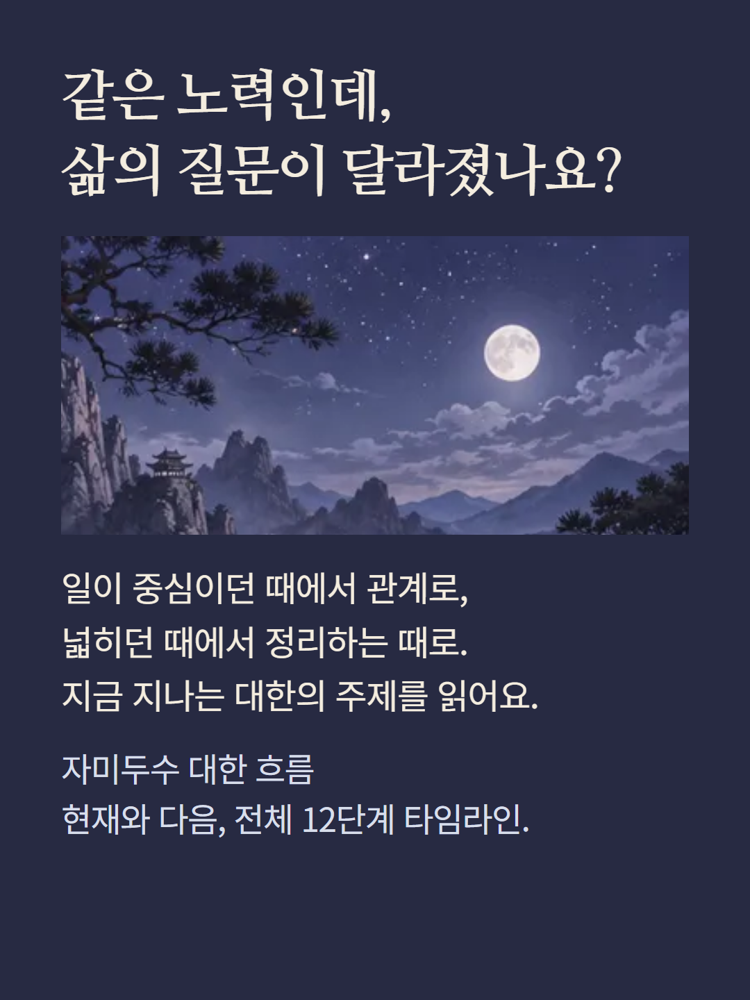
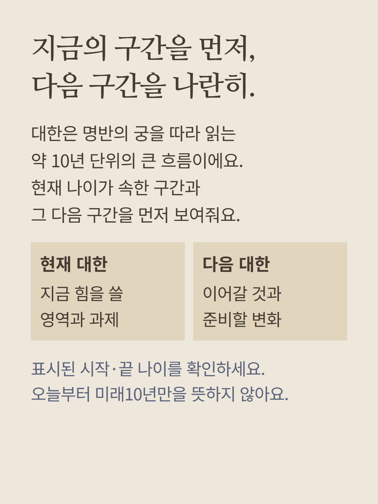
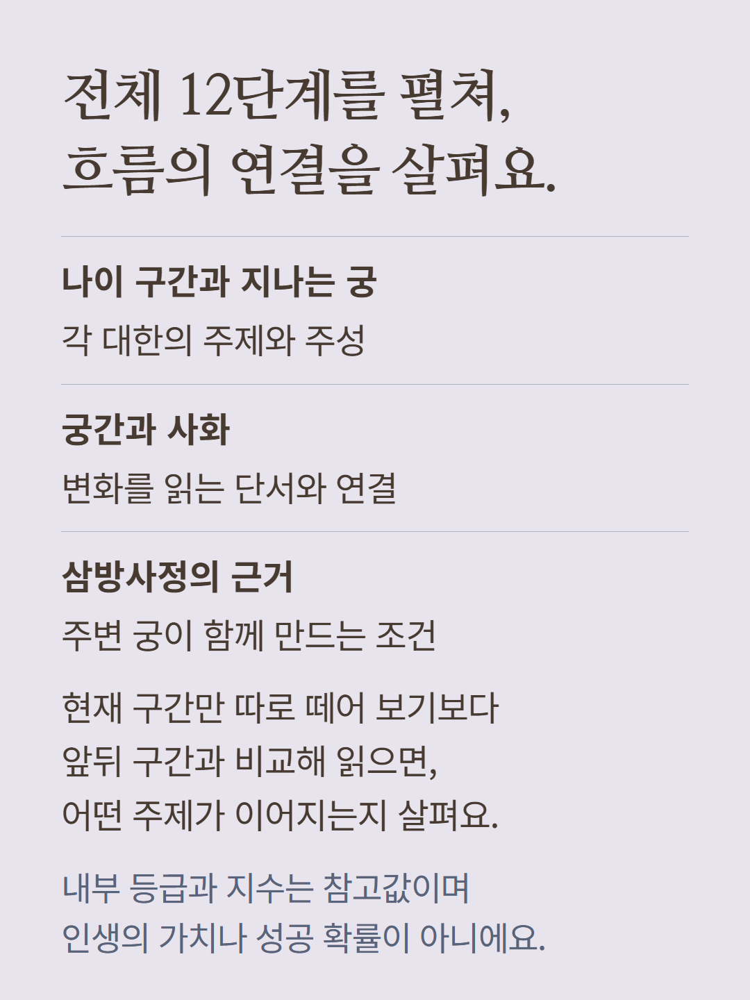
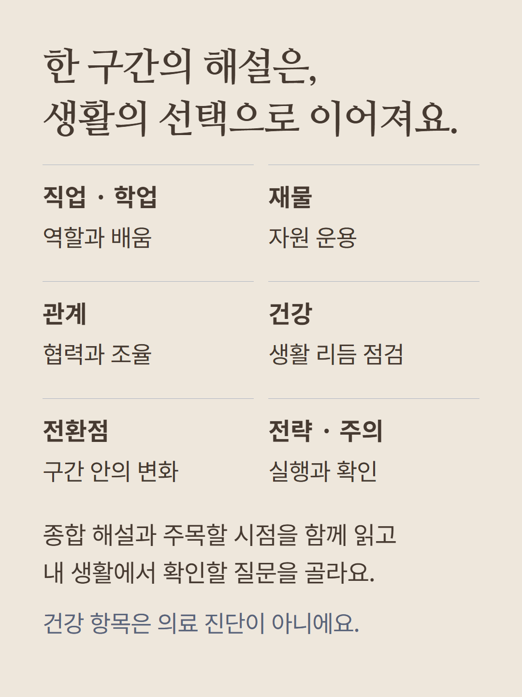
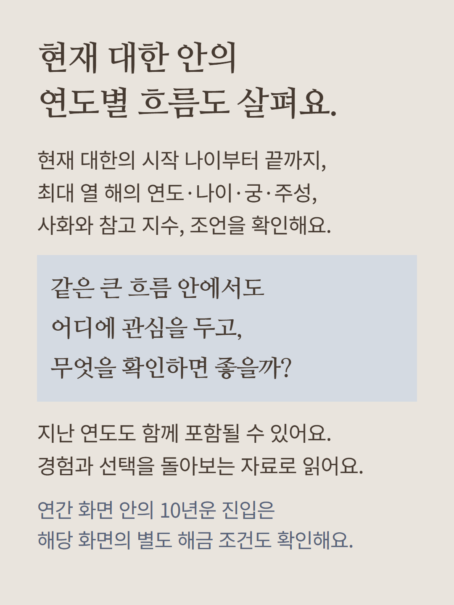
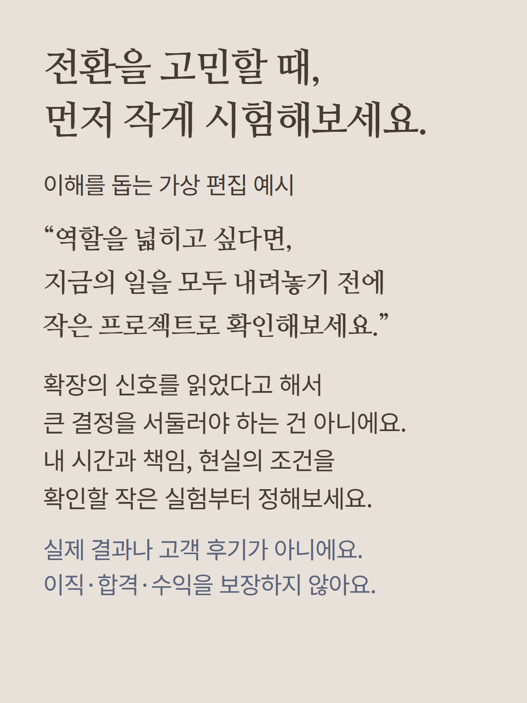
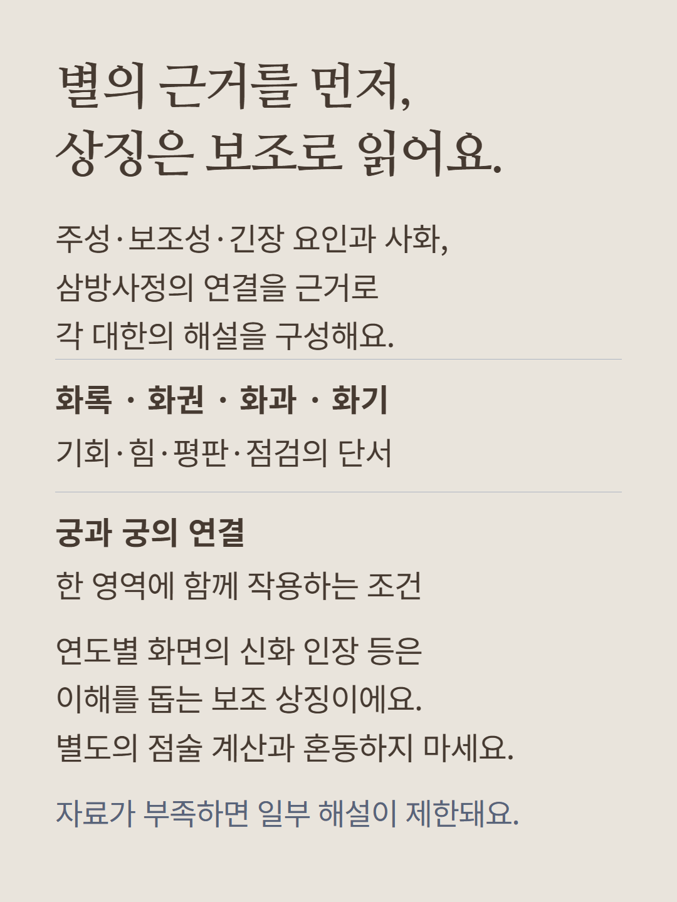
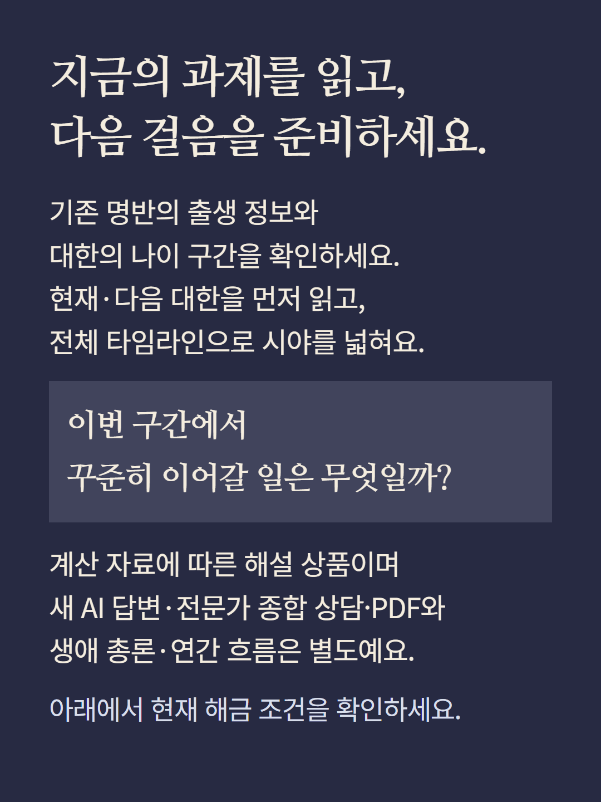

기본 명반의 대한 현재·다음 구간과 전체12단계 타임라인을 여는 상품입니다. 구간별 나이·궁·주성·궁간·사화·삼방사정·내부 등급과 지수,종합·직업학업·재물·관계·건강리듬·전환점·전략·주의·주목할 시점을 확인합니다. 연간 흐름 화면의 10년운에서는 현재 대한 시작부터 끝까지 최대10개의 연도·나이·궁·주성·사화·참고지수와 보조상징·조언을 확인하며,해당 화면의 생애연간 해금은 별도입니다. 현재 대한은 오늘부터 미래10년이 아니므로 지난 연도를 포함할 수 있습니다. 계산자료가 부족하면 표시가 제한됩니다. 등급·점수는 내부 참고값이며 인생의 가치·성공확률·의료진단이 아닙니다. 새 AI답변·전문가상담·PDF·생애총론연간은 별도입니다. 예시는 가상편집으로 실제결과·후기가 아니며,이미지는 분위기 연출입니다. 현재 해금 조건을 확인해 주세요.